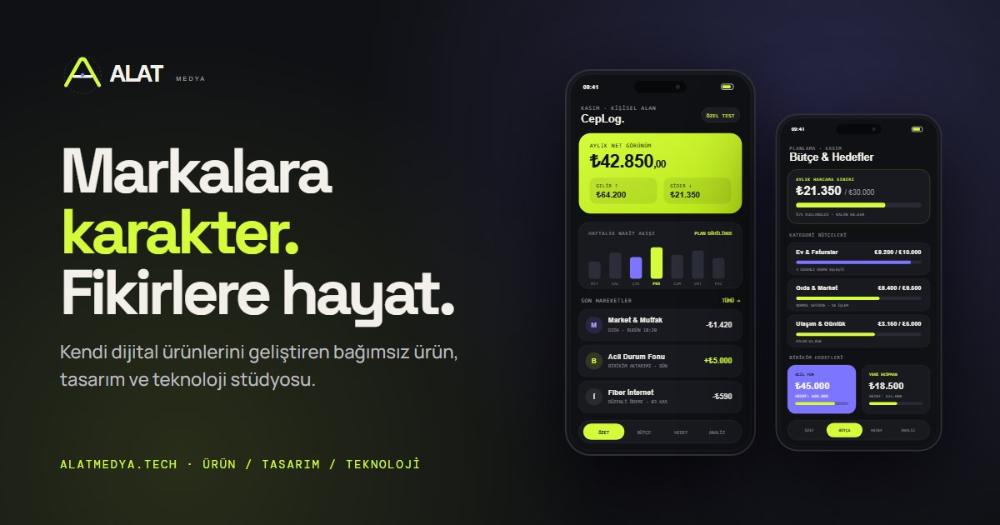

Sorun
Finansal Görünürlük Eksikliği
Kullanıcılar nereye para harcadıklarını, ne kadar biriktirebileceklerini ve düzenli ödemelerinin toplam yükünü kolayca göremez.
Amiral Ürün
Özel Test · Aktif GeliştirmeCepLog; işlemleri, bütçeleri, birikimleri, hedefleri, düzenli ödemeleri ve finansal analizleri tek bir kişisel çalışma alanında birleştiren yeni nesil kişisel finans uygulamasıdır.
CepLog is a personal finance application designed to turn everyday financial activity into a clear and understandable financial picture.

CepLog Ne Çözüyor?
Birçok kullanıcı kendi finansal durumunu net bir şekilde göremez. İşlemler dağınık, bütçeler takip edilemiyor, hedefler bulanık kalıyor. CepLog, bu dağınıklığı gidererek kullanıcıya kendi parasını anlayabildiği, planlayabildiği ve yönetebileceği tek bir çalışma alanı sunar.
Sorun
Kullanıcılar nereye para harcadıklarını, ne kadar biriktirebileceklerini ve düzenli ödemelerinin toplam yükünü kolayca göremez.
Çözüm
CepLog tüm finansal verileri tek yerde toplar: işlemler, gelir, gider, bütçe, hedef, birikim ve nakit akışı bir arada.
Vizyon
Kullanıcının kendi finansal gerçeklerini doğal dilde sorgulayabildiği, anlayabildiği ve kararlar alabileceği bir yapay zekâ katmanı geliştirilmektedir.
Yol HaritasıMevcut Durum
Şu An Aktif Olan
Yol Haritası — Planlanan
Yapay zekâ katmanı, deterministik finansal hesaplamaların üzerine inşa edilecektir. LLM; bakiye veya işlem hesabından sorumlu olmayacak — kullanıcının bu gerçekleri doğal dilde anlamasına yardımcı olacak.
Daha Fazla Bilgi
Ürün, test süreci veya iş birliği hakkında e-posta ile ulaşabilirsiniz.